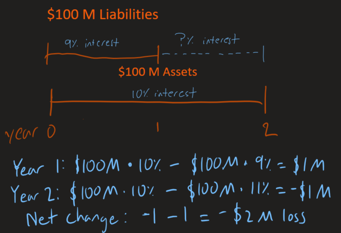
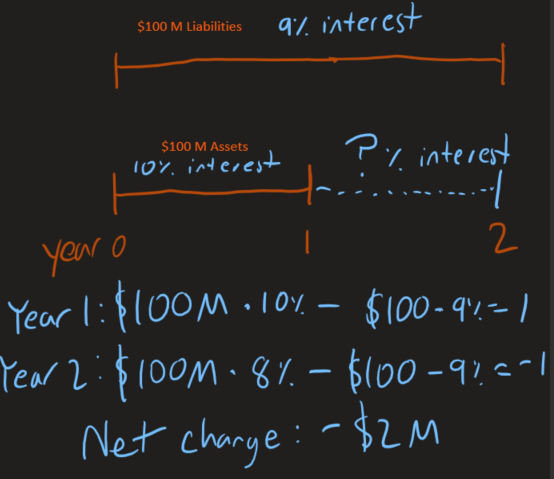
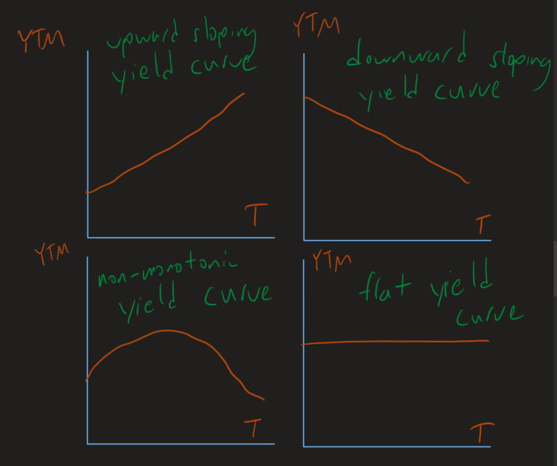
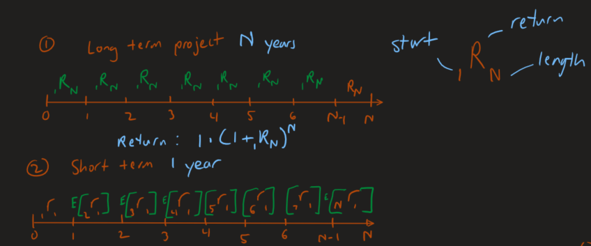
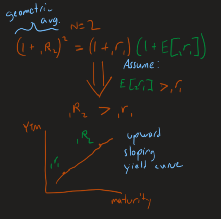
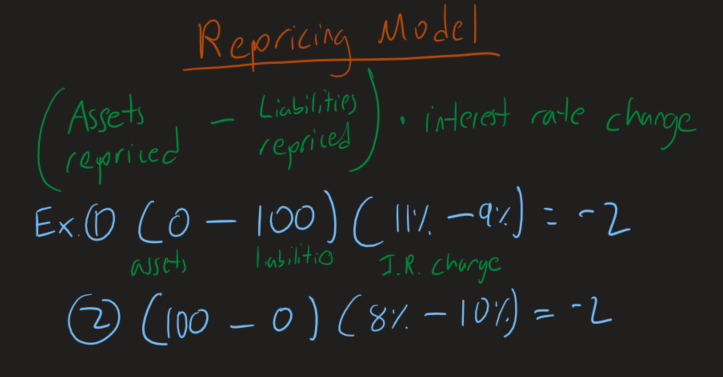
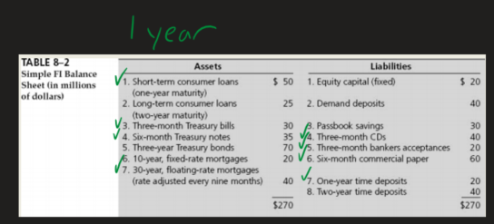
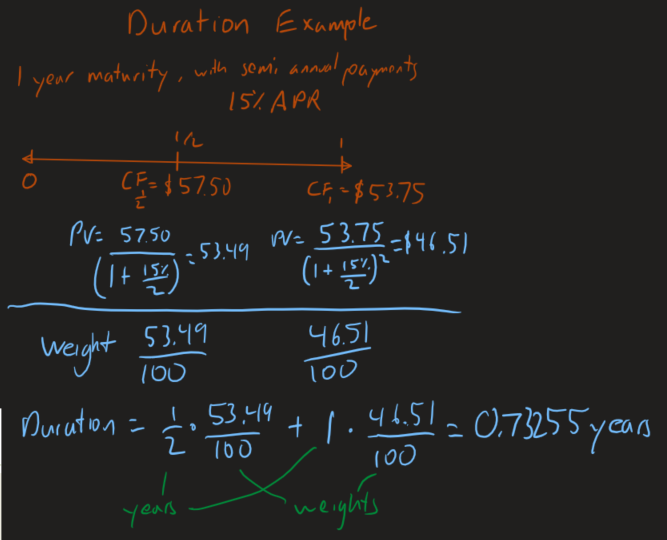

Interest rate risk is a type of market risk that has to do with interest rates. Fixed income and fixed liabilities are what mainly gets affected.
When there is a difference in maturities between a firm's assets and liabilities, there is a maturity mismatch meaning there is interest rate risk.
Say you are a firm and you issue $100M of liabilites of 1-year maturity to finance a project (assets). This project needs $100M/year with a 2-year maturity
The maturity in assets is longer than that of liabilities. What will you do at the end of year one when you your liabilities are due and you have to refinance your project (assets)?
In this case, there is a mismatch of maturities between Assets and Liabilities. There is an amount of $100 M liabilities whose interest rate has changed. $100 M liabilities will need to be repriced in one year.
Now imagine you have 2 years of set liabilities, and only 1 year of set assets.
When you secure assets for year 2, there is a risk that the interest you earn on your assets is less than what you are paying for your liabilities.
In this case, there is a mismatch of maturities between assets and liabilities. There is an amount of $100M assets whose interest rate is changed. $100M of assets needs to be repriced in one year.
Interest rates essential measure the cost of money, meaning the amount of money in the open market determine the interest rate.
The central bank of a country controls the interest rate level through open market operations.
Open market operations influence the money supply. These actions can be buying and selling government bonds on the open market. If the government purchases government bonds, cash will be transferred from the government to the open market, so there will be more money supply. A higher money supply will lower the interest rate.
During the 2008 financial crisis and COVID crisis, the US governemnt lowered interest rates in order to stimulate the economy.
When the US Federal Reserve bank deciedes to raise interest rate, it will go to the open market and sell government bonds which will reduce the money supply, thus raising interest rates.
Taking a look at historical T-Bill rates, you will notice they are volatile. They move with business cycles. When their is a recession, interest rates are lowered. When there is an economic boom or inflation, interest rates rise.
Recently interest rates have been low. In the early 2000s low interest rates were caused by the bursting tech bubble and the 9/11 terrorist attacts. Moving forward, banks took advantage of low interest rates and began to issue subprime mortgage loans. As the economy strengthend, interest rates begain to rise around mid 2000s. This caused the subprime mortgages to default and during the 2008 financial crisis, interest rates began to decrease again.
If we know interest rates rise and fall with the economy, can we predict future interest rates? We would want to be able to predict future interest rates, so we might be able to hedge against interest rate risk.
Term structure of interest rates describes the yields of a security when the maturity of the security changes, while everything else is kept constant.
Yields can also be called Yield to Maturity or YTM. This yield (YTM) is different than the YTM when discussing bond values. For a bond, YTM is the discount rate that is used to calculate the price of a bond.
When the YTM is lower than the coupon rate of a bond, you have a premium bond. When the YTM is higher, you have a discount bond. When the coupon rate and YTM are the same, the bond is at its par value.
For the rest of this article, YTM will refer to the interest rate, and not the discount rate of a bond.
Here are 4 difference yield curves. On the y-axis is YTM, and the x-axis is maturity time. Yield curves describe how interest rates change over time.
The Unbiased Expectations Theory describes the relationship between long-term rates and short-term rates. Long-term rates are the geometric average of current and expected short-term rates. Since we do not know future rates, we use expected rates.
Here is an example of a 2 year maturity where we assume that the expected interest rate in year 2 will larger than that of the first year.
The Repricing Model is to measure potential changes in interest income and interest expense over the near future due to changes in interest rates.
Here the formula and examples of it from the earlier examples of refinancing and reinvestment risk. The repricing model tells you how much a firm will gain or lose from a change in interest rates.
The difference between the amount that needs to be repricing and the amount of liability that needs to be repricing is known as the repricing gap. When discussing a repricing gap, it is important to identify the time period that the assets/liabilities will need to be repriced. This is known as the Maturity Buckets.
You can find the repricing gaps for assets and liabilities fairly easily. The Federal reserve bank requires that commercial banks report their repricing gaps with maturities of
Here is an example of rate sensitive assets in a balance sheet for a maturity bucket of 1 year.
When the repricing gap is negative, that means that there are more rate sensitive liabilities than assets. When liabilities are greater than assets, there is more refinancing risk than reinvestment risk. That means that as interest rates increase, we are more exposed to interest rate risk through our refinancing risk.
A similar thing can be said when rate sensitive assets are greater than liabilities. This means there is more reinvestment risk, and there would be a benefit to us from an increase in interest rates.
The opposite happens if interest rates decrease. When interest rates decrease, it is a good thing for refinancing risk (since you can get better rates), and a bad thing for reinvestment risk (since your investment will cost more).
Let's build up the intuition of duration first.
Let's first see how the market price of bonds is affected by interest rate change. In general, the longer the term to maturity, the greater the sensitivity to interest rate changes there are. This is mainly because when we price bonds, we discount the coupon payment of the bond by the interest rate (YTM). For longer period bonds, the discount factor compounds more than a shorter period bond.
Another trend with interest rates and bond prices is that higher coupon bonds are less sensitive to changes in interest rates. This is because high coupon bonds generate more earlier on cash flows which get discounted less.
Now, what happens to bond prices when the coupon payments and maturity times change? This is what we can use duration for.
Duration is the weighted average time to maturity using the relative present values of the cash flows as weights; The units of duration are years. Duration combines the effects of differences in coupon rates and differences in maturity. It is based on the elasticity of bond price with respect to interest rate.
A thing to note is that duration is typically smaller than the length of the bond since duration is weighted with earlier coupon payments.
You can think of duration as the "adjusted maturity" based on the actual maturity but adjusted for the effect of coupon payments on the relation between bond value and interest rating changes. In other words, duration takes into account the market value of the bond.
As you increase the maturity of a bond, the duration increases. This is because duration is simply an adjusted maturity. However the amount of duration increases is less as the maturity keeps increases. This is because far into the future cash flows are heavily discounted, so their effect on duration is less.
As you increase coupon payments, the duration decreases. This is because more coupon payments put more weight on the earlier cash payments, thus reducing the duration.
As you increase the YTM, the duration decreases. This is because with a higher YTM, later cash flows will be more heavily discounted, thus the duration will decrease.
The duration of a zero-coupon bond is the same as the maturity since 100% of its present value is generated by the payment of the face value, at maturity.
We can use match the duration of assets and liabilities which will offset profits if interest rates rise or fall. This is called Balance Sheet Immunization.
TODO duration elasticity, @1:53